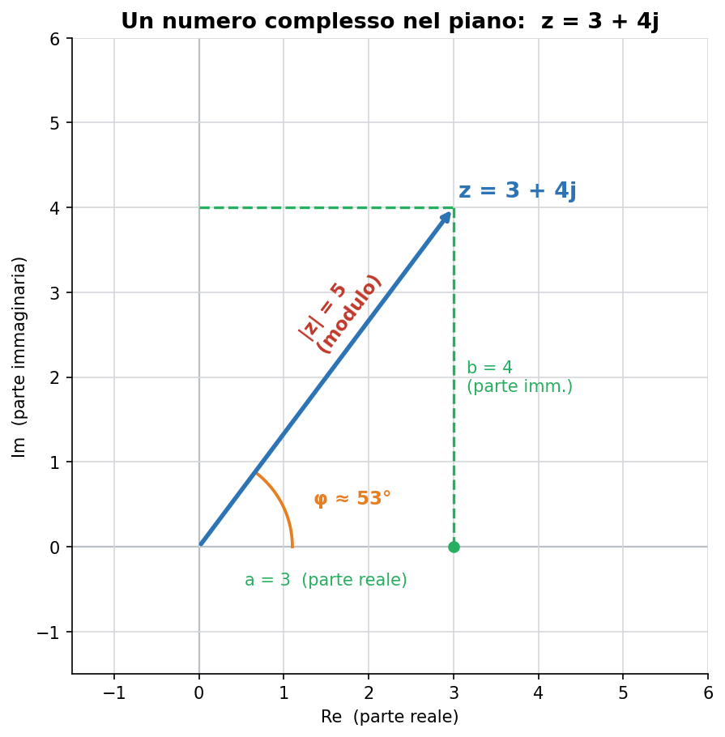
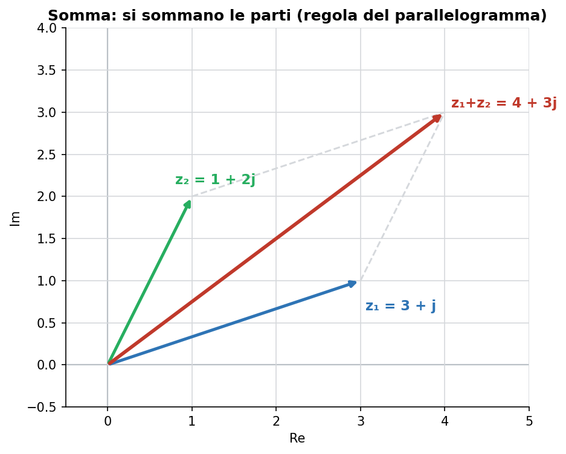
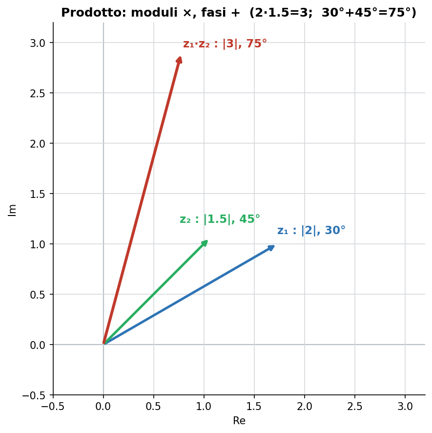
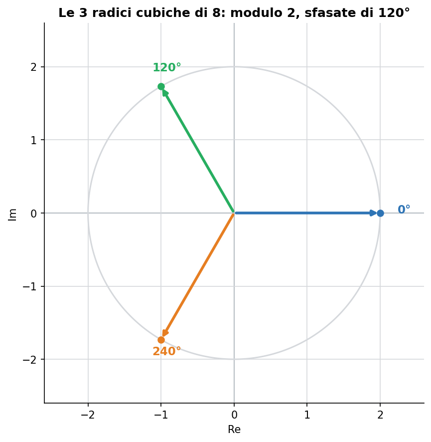

Blocco Fondamenti del programma di Udine (Ingegneria Elettronica, MATH-03/A). Il primo blocco del corso comprende logica, teoria degli insiemi e i numeri reali e complessi: i numeri complessi sono quindi parte della prima lezione.
Perché servono i numeri complessi
Tra i numeri reali non esiste la radice quadrata di un numero negativo: non c'è nessun numero reale il cui quadrato faccia −1. Per superare questo limite si introduce un numero nuovo, l'unità immaginaria, definita dalla proprietà:
j² = −1
In matematica pura si scrive i, ma in elettronica si usa j perché la lettera i indica già la corrente. Con questo mattone nasce un intero mondo di numeri che vivono su un piano invece che su una retta.
1. Che cos'è un numero complesso
Un numero complesso è una coppia di informazioni: una parte reale e una parte immaginaria. Si rappresenta come un punto (o una freccia dall'origine) sul piano complesso: l'asse orizzontale porta la parte reale, quello verticale la parte immaginaria.
z = a + jb
dove a = Re(z) è la parte reale e b = Im(z) è la parte immaginaria. Dalla freccia si leggono due grandezze fondamentali:
il modulo |z| = lunghezza della freccia (quanto è “grande” il numero);
la fase φ = angolo che la freccia forma con l'asse reale (in che direzione punta).

Fig. 1 — Il numero z = 3 + 4j nel piano: parte reale a = 3, parte immaginaria b = 4, modulo |z| = 5, fase φ ≈ 53°.
2. Le due forme: cartesiana e polare
Lo stesso numero si può scrivere in due modi, entrambi utili a seconda del calcolo.
Forma cartesiana (o algebrica)
z = a + jb — comoda per sommare e sottrarre.
Forma polare (o esponenziale)
z = |z|·(cos φ + j sin φ) = |z|·ejφ — comoda per moltiplicare, dividere ed elevare a potenza.
Il legame con la forma esponenziale è la formula di Eulero: ejφ = cos φ + j sin φ.
Passaggio tra le due forme
|z| = √(a² + b²) φ = arctan(b / a)
a = |z|·cos φ b = |z|·sin φ
Esempio svolto. Dato z = 3 + 4j: |z| = √(3² + 4²) = √25 = 5; φ = arctan(4/3) ≈ 53,13°. Quindi in polare z = 5·ej·53°. Verifica: a = 5·cos 53° ≈ 3, b = 5·sin 53° ≈ 4. Torna.
3. Il complesso coniugato
Il coniugato di z = a + jb è z̄ = a − jb: stesso numero con la parte immaginaria cambiata di segno (una riflessione rispetto all'asse reale). La sua proprietà chiave è:
z · z̄ = a² + b² = |z|²
Il prodotto di un numero per il suo coniugato è un numero reale (il quadrato del modulo). È il trucco che rende possibile la divisione, come si vedrà tra poco.
4. Somma e sottrazione
Si sommano (o sottraggono) separatamente le parti reali e le parti immaginarie. Geometricamente è la regola del parallelogramma: la freccia risultante è la diagonale.
(a + jb) + (c + jd) = (a + c) + j(b + d)

Fig. 2 — Somma: z₁ = 3 + j e z₂ = 1 + 2j danno z₁ + z₂ = 4 + 3j (diagonale del parallelogramma).
Esempio svolto. (3 + j) + (1 + 2j) = (3 + 1) + j(1 + 2) = 4 + 3j.
5. Prodotto e divisione
Prodotto
In forma cartesiana si moltiplica come un normale binomio, ricordando che j² = −1. In forma polare, invece, la regola è semplicissima:
i moduli si moltiplicano, le fasi si sommano.

Fig. 3 — Prodotto: (|2|, 30°) · (|1.5|, 45°) = (|3|, 75°). Moltiplicare per un complesso significa scalare e ruotare.
Esempio svolto (cartesiano). (3 + j)(1 + 2j) = 3 + 6j + j + 2j² = 3 + 7j − 2 = 1 + 7j.
Esempio svolto (polare). 2·ej30° × 1,5·ej45° = 3·ej75° (2 × 1,5 = 3; 30° + 45° = 75°).
Divisione
Si moltiplicano numeratore e denominatore per il coniugato del denominatore: così il denominatore diventa reale e la divisione si sblocca.
Esempio svolto. (3 + j)/(1 + 2j) = (3 + j)(1 − 2j) / (1 + 2j)(1 − 2j) = (5 − 5j)/5 = 1 − j.
6. Potenze e radici: la formula di De Moivre
In forma polare elevare a potenza è immediato: si eleva il modulo e si moltiplica la fase per l'esponente.
zn = |z|n·ejnφ
Per le radici vale il fenomeno più interessante: un numero complesso ha n radici n-esime, tutte con lo stesso modulo e disposte su un cerchio, sfasate regolarmente di 360°/n.

Fig. 4 — Le tre radici cubiche di 8: stesso modulo (2), sfasate di 120° l'una dall'altra.
Esempio svolto. Le radici cubiche di 8: modulo ∛8 = 2, angoli 0°, 120°, 240°. La prima è il numero reale 2; le altre due sono complesse.
7. A cosa servono in elettronica
Questa è la ragione per cui i complessi tornano ovunque nei corsi successivi (Elettrotecnica, Teoria dei segnali, Circuiti).
Fasori: una tensione o corrente alternata ha un'ampiezza e uno sfasamento; un numero complesso li racchiude entrambi (modulo = ampiezza, fase = sfasamento).
Impedenza: Z = R + jX è un numero complesso — parte reale = resistenza, parte immaginaria = reattanza di condensatori e induttori.
Le derivate e gli integrali delle sinusoidi diventano semplici moltiplicazioni per jω: i calcoli difficili si trasformano in aritmetica tra complessi.
Errori tipici da evitare
Nel prodotto in forma cartesiana, dimenticare che j² = −1 (e lasciare il termine come se fosse +1).
Confondere il modulo |z| con la parte reale a: sono diversi (a meno che il numero non sia reale puro).
Nella divisione, dimenticare di moltiplicare per il coniugato del denominatore.
Nel calcolo della fase, non controllare il quadrante: arctan(b/a) da solo non distingue, per esempio, il primo dal terzo quadrante.